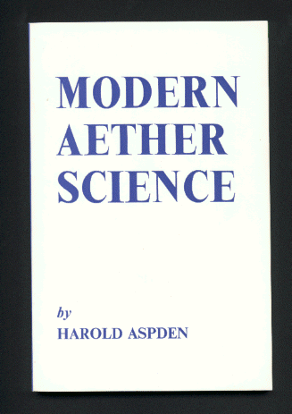
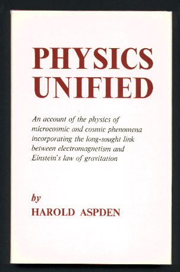
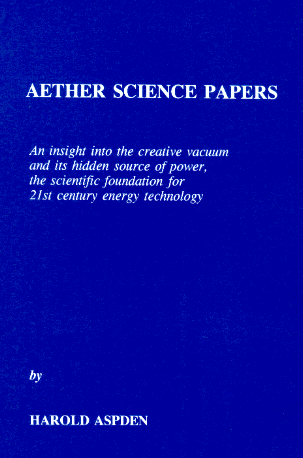

The titles in the following listing are all currently available. They have all been published privately by Sabberton Publications, which Dr. Aspden set up in 1966 for the purpose of disseminating information concerning his research interests. Information concerning ordering procedure is provided below. It applies only if payment is made by bank checks drawn on a U.K. bank or a U.S. bank, or if payment is by International Money Order or Eurocheque in English pounds denomination. If payment is to be by credit card you should place your order through your local book store, quoting the ISBN number. Alternatively you may wish to use an on-line book ordering facility such as is provided by accessing www.waterstones.co.uk or www.bookpages.co.uk and entering the name of the author: Harold Aspden, or the relevant ISBN No. as your search query. Note that the prices quoted are in British pounds.
In spite of its title, in the context of its academic significance, this book is of primary importance. Two-thirds of its pages comprise copies of 14 published papers which have appeared in scientific periodicals that are not readily available in many university libraries. This accounts for the large page format. Those papers provide self-contained treatments of the physics involved, for example, in understanding how to calculate G, the constant of gravitation, and the proton-electron mass ratio. Any university library that does not stock this book and any professor of theoretical physics who is unaware of its content is at a disadvantage as what is disclosed in these Web pages becomes better known.
The caption under the title of this work reads: "An insight into the creative vacuum and its hidden source of power, the scientific foundation for 21st Century energy technology."
This book is deliberately non-mathematical. It was written to complement the authors earlier mathematical treatment as presented in 'Physics without Einstein', published in 1969 as SBN 85056 0012, now out of print. As stated on its back cover: "'Modern Aether Science' is an attack on those abstract philosophical dogma which are impeding the development of physics. Also the author records progress made in expanding the physics of the earlier book, particularly on the formation of the solar system, the stability and structure of the atomic nucleus, and the periodic reversals of the earth's magnetism. It is shown that the aether has to be revived for complete understanding of physical science." At the time this book was written, though it did explain how energy stored by the aether as a magnetic inductance phenomenon, and recovered, it did not venture into speculation about tapping aether energy for technological benefit, a possibility that was recognized only later.
Title caption reads: "An account of the physics of microcosmic and cosmic phenomena incorporating the long-sought link between electromagnetism and Einstein's law of gravitation." This book was published at about the time the U.K. Institute of Physics published the author's paper showing how Einstein's law of gravitation could be derived without recourse to General Relativity Theory, simply by following Leon Brillouin's suggestion of analysing how energy is deployed in the field medium intervening the interacting bodies.
The above $ prices are in U.S. dollars. Cheques drawn on a U.K. bank account to be made payable to 'Sabberton Publications'. U.S. dollar checks drawn on U.S. bank account to be made payable to 'Harold Aspden'. International Money Orders should be in U.K. pounds if made payable to 'Sabberton Publications'. In Europe, Eurocheques are acceptable if written in U.K. currency (GBP) and made payable to 'Sabberton Publications'. Use the E-Mail address haspden@iee.org for enquiries.
Mailing address for orders: SABBERTON PUBLICATIONS, P.O. Box 35, Southampton, SO16 7RB, England. Fax.: Int+44-1703-769-830.
Payment by VISA or MASTERCARD cannot be accepted but that possibility can be explored by accessing www.bookpages.co.uk and entering the name of the author: Harold Aspden, or the relevant ISBN No. as your search query.
This is a 41 pp. report by which the author introduces experimental evidence that offers promise in the quest to discover new ways by which to regenerate spent energy. It is shown how one can verify that there is more energy set up by a magnetic field traversing a pole gap than is supplied to the magnetizing winding. This implies that the quantum activity sustaining action in a ferromagnetic core can tap energy from the the thermodynamic state of the aether. There is an analogous way in which magnetism can be used, not to tap energy from the aether, but as a catalyst which converts heat in the body of the test apparatus into useful electrical form. This is a thermoelectric effect which seemingly defies the second law of thermodynamics and gives basis for the second experiment described. This report provides background for onward more specific reporting on the author's experimental efforts in this series of Energy Science Reports. This Report No. 1 concerns the research status as at February 1994.
This is a 70 pp. report. It is is a documentary account relating to the Strachan-Aspden invention. This is a thermoelectric device of very unorthodox construction, mainly comprising a parallel plate capacitor assembled from a polymer dielectric film coated with very thin bimetallic layers of nickel and aluminium. Heat is applied so as to flow through those thin metal coatings in a direction transverse to the electrical oscillations set up in the capacitor. Without any input of electrical power the application of a temperature differential of only 20 degrees can promote oscillations which generate electricity which runs a small motor. A small cube of ice melting on one heat surface is sufficient to power the motor. The device operates in reverse, with input of electricity producing oscillations which can rapidly freeze water. The efficiency is so high that extensive research is warranted to understand fully the physics involved. However, although each device built functioned well for many successive demonstrations to potential sponsors, there was eventually a mysterious deterioration in performance with repeated testing. Strachan could not resolve this problem and the initial sponsorship support was withdrawn. In the event, this author (Aspden) has persevered and now believes that the deterioration is easily remedied. This Part I report is a full account of the research, including test data, to the time when the project was abandoned in 1994. Energy Science Report No. 3 is the Part II document which now (1997) discloses the cause of the deterioration and provides an update on the patent position. The remedy, however, is very simple and revival of the development activity is now justified in view of the potential importance of the subject invention to the refrigeration field as well as the efficient generation of electricity from low grade sources of heat. By this disclosure it is sought to encourage research on this project and the patents (there are three granted U.S. patents) are available for outright acquisition. This Report No. 2 was published on March 31st 1997.
This is a 39 page report. The subject of the report has already been introduced in describing the scope of Report No. 2. Neither Report No. 2 nor Report No. 3 is intended for general readers interested in Energy Science. Both reports are specifically intended as technical briefings for those expert in thermoelectrics and actively interested in new product development. The reports are aimed at encouraging R&D on a project which needs follow-through development, preferably by a corporate laboratory. Neither of the original inventors can take the invention further except by cooperation with others who assert their own initiatives. The first 16 pages of this Report No. 3 comprise a 1997 update suggesting the way forward for R&D. Pages 17-39 are simply research notes dating from the period 1994, outlining the research in prospect at that time. The 1994 status of the main project, as specifically related to the patented devices built by Scott Strachan, is essentially the subject of Report No. 2 . Such material as dates from 1994, though disclosed in confidence to sponsoring interests, is now made available in these 1997 publications of Reports Nos 2 and 3. Publication date March 31st 1997.
This is a 38 pp. report. There are many unanswered questions concerning possible experiments involving magnets as a means for adding power to an electric motor. Frank Potter had struggled to find someone of academic standing who could prove to his satisfaction that what he had in mind would not work. Contrary to orthodox opinion this author supported the Potter case. This report is a preliminary feasibility study based on theoretical analysis of the magnetic actions involved. Much of what is described in this text has bearing upon the experimental findings which are to be reported in later Energy Science Reports, notably in Report No. 7 and Report No. 9.
This is a 60 pp. report in which the author discusses the physics that bear upon the anomalous heat generation in electrolytic apparatus where heavy water is the electrolyte. Owing to the absence of neutrons as a product of a cold fusion reaction scientists have not been willing to accept that nuclear fusion can be involved. This report takes up that issue from a fundamental theoretical point of view by showing how Nature determines an equilibrium state of abundance as between the proton and deuteron composition of water. The conclusion is that the natural abundance ratio of the isotopic composition of hydrogen in water is physically determined by an ongoing transmutation activity. Cold nuclear fusion is therefore occurring continuously. Research students interested in nuclear physics should take note of what is presented in this report. It is of fundamental importance and contains material not disclosed elsewhere.
This is a 34 pp. report. Its purpose is to show that the true nature of inertia arises from a conservative energy property of each element of electric charge as it responds to the accelerating effects of other charge. Attention is drawn to a fundamental error in the conventional derivation of the Larmor formula for energy radiation, which fails to give proper account of interaction with the accelerating field. The report reproduces three of the author's published papers, bringing together in this short monograph a summary analysis which explains the force of gravity and Nature's way of creating the proton. This report is for the student of physics who seeks to understand inertia and to know what determines the actual values of the proton-electron mass ratio and G, the constant of gravitation.
This is a 37 pp. report. For the general reader interested in understanding why a magnetic reluctance motor might be designed to operate with over-unity performance Report No. 9 is the one to read. This Report No. 7 is simply a slightly edited copy of a research report describing the initial progress on a motor project funded by the U.K. Department of Trade and Industry, the object being to develop a new kind of motor which aimed at higher efficiency by adopting a construction which had regenerative features. The report is in two parts. The second part is the descriptive portion of a patent covering the structure and design principles of the motor and the first part presents the test results of the machine. This Report No. 7 was issued on March 31st 1997.
This is a 33 pp. report on the author's interpretation of how the Correa over-unity plasma discharge energy generator really works. The invention is the subject of three quite remarkable, recently granted U.S. patents owned by Dr. Paulo Correa and Alexandra Correa. It is an invention which can have a dominant effect on future energy technology. The technology involves plasma discharge tubes of unusual design connected in an unusual circuit configuration. The tubes exhibit a negative resistance characteristic which is exploited to cause the d.c. input power to sustain oscillations in a closed circuit. The output load is in a shunt circuit connected across the tube terminals through a capacitor coupling, so drawing a.c. power from the tube. This output is rectified and it is found that the output power exceeds the input power by a significant factor. The purpose of this report is to describe the operating principles as interpreted by this author and explain the nature of the hidden energy source which accounts for this over-unity operation.
This is a 34 page report in which the author reveals another way in which to tap aether energy, one which may well replace main electrical power generating installations in the years ahead. The Report is in four parts. Part I outlines the design of a large scale motor such as might become a prime mover in a power generating plant or be used to power an ocean liner. Part II concerns the design features of a small prototype motor that can be assembled in a home workshop. Part III is an academic discourse aimed at educating students and even university professors of electrical engineering on some elementary, but unfamiliar principles of magnetism. Part IV discusses further the scope for research and commercialization. It is aimed at government officials and research directors in industry, with a view to urging action to exploit this new technology. The primary thrust of this Report is to show why over-unity operation of an electric motor, meaning one that can deliver more mechanical power output than is supplied as electrical power input is really possible. A motor tested by the author is described and illustrated. This Report summarizes some of the progress made in a research project funded by the U.K. Department of Trade and Industry aimed at improving the efficiency of a magnetic reluctance motor by tapping thermal energy in a regenerative magnetocaloric process. Report No. 7 provides more details of the experiments performed in the early phases of the project. This Report No. 9 was issued on November 6th 1996.
This is a 57 page report in which the author discusses a mysterious aspect of Energy Science concerned with the anomalous effects which electromagnetic fields can have upon our body cells. The main theme is the health hazard posed by using electric blankets and living too close to overhead electrical power lines. An explanation is given for the curious fact that cyclotron-like resonance, which transfers energy from weak pulsating fields into the ion-populated fluids in the human body, in countries powered at 50 Hz or 60 Hz. How can the body chemistry support a resonance phenomenon at either of these frequencies? You have the answer in this Report. The human body introduces something new to electrical science, a system in which electricity is conveyed by molecular ions rather than electrons. Energy anomalies arise when currents flow through liquids and also in cold cathode discharges through rarefied gas. This has bearing upon the subject of Report No. 8. However, as Report No. 10 shows, research on our body chemistry reveals a superconductive condition and such research may help to solve some of the basic questions of fundamental physics having a bearing upon the nature of gravitation. This Report No. 10, the last in this series, was issued on March 31st 1997.
Reference is made in the accompanying Web pages to earlier publications by H. Aspden. For example, the books 'Physics without Einstein', the first and second editions of 'The Theory of Gravitation', the later (1975) book 'Gravitation' and items other than those published as scientific papers. A few copies of some of these remain available, as well as reprints of several of the scientific papers abstracted in these Web pages. See listing in BIBLIOGRAPHIC section. So long as copies remain available, these can be supplied at minimal cost to cover postage to those who purchase (or have purchased) one of the above-listed books or Reports. However, preliminary E-Mail enquiry to ensure availability is requested. Only some 10 or so copies of the book 'Physics without Einstein' are now held by the author and will only be released in special circumstances, eg. as where requested for onward donation to a University Library (price U.S. $50 or U.K. 30). Those interested in the contents of 'Physics without Einstein' are recommended to wait to see reference to these items in the development of these Web pages.


